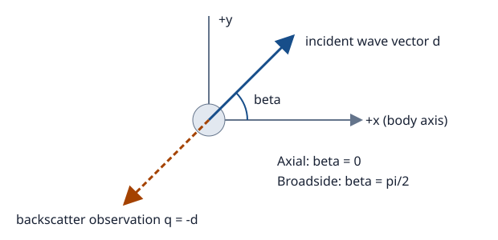

Conventions
This section defines the equations, units, and directions used throughout the examples. Choose a method using Choosing a solver, then read its theory page.
Harmonic acoustic problem
In a homogeneous exterior fluid, pressure satisfies
\[\nabla^2 p + k^2 p = 0, \qquad k = \frac{2\pi f}{c}, \qquad p = p_{\mathrm{inc}} + p_{\mathrm{scat}}.\]
Here frequency is in Hz, sound speed in m/s, and wavenumber in rad/m. The outgoing kernel exp(im * k * r) / (4pi * r) used by the numerical solvers implies the time convention exp(-im * omega * t). This sign convention is inferred from the implementation. The incident plane wave is exp(im * k * dot(direction, position)).
The outgoing pressure at large radius has scattering amplitude of dimension length:
\[p_{\mathrm{scat}}(r\hat{\boldsymbol q}) \sim f_s(\hat{\boldsymbol q})\frac{e^{ikr}}{r}.\]
The sphere modal implementation uses -im / k * sum((2l + 1) * P_l(cos(angle)) * A_l). Compare complex values only after matching phase, incident direction, and normalization.
Target strength
\[\sigma_{\mathrm{bs}} = |f_s(-\hat{\boldsymbol d})|^2, \qquad \mathrm{TS} = 10\log_{10}\left(\frac{\sigma_{\mathrm{bs}}}{1\,\mathrm{m}^2}\right) = 20\log_{10}\left(\frac{|f_s|}{1\,\mathrm m}\right).\]
The package's backscattering cross-section convention has no additional 4pi factor. target_strength also evaluates directional scattering strength for bistatic observations. These values describe backscatter only when the observation is opposite incidence. Zero amplitude maps to -Inf dB. If a display clips small values, label that clipping. Keep the underlying numerical result unchanged.
julia> using AcousticScattering
julia> target_strength(0.01 + 0im)
-40.0Incidence and observation are different
| Input | Meaning |
|---|---|
incidence_angle | Polar angle of the incident direction relative to the body axis |
incidence_azimuth | Azimuth supported by the full 3D BEM path |
angle, azimuth on axisymmetric BEM/MFS results | Observation direction in fixed body coordinates |
direction on full BEM results | Observation unit vector in Cartesian coordinates |
angle on sphere modal | Scattering angle relative to the incident axis |
Ordinary axisymmetric geometry uses z as its axis:

Arrows indicate direction vectors, not positions of transmitter and receiver. The incident wave propagates along d, and monostatic observation is along -d.
\[\hat{\boldsymbol d} = (\sin\beta\cos\alpha,\sin\beta\sin\alpha,\cos\beta), \qquad \hat{\boldsymbol q}_{\mathrm{bs}}=-\hat{\boldsymbol d}.\]
Thus axial incidence has beta = 0, while broadside has beta = pi / 2. For incidence in the x–z plane, axisymmetric backscatter requires observation angle = pi - beta, azimuth = pi. Its default angle = pi, azimuth = 0 only gives backscatter for axial incidence. Full BEM's default observation and bent-cylinder MFS's result already use the negative incident direction.
The bent-cylinder implementation uses its own bend-plane convention, direction = (cos(beta), 0, sin(beta)). Do not transfer Cartesian vectors between that implementation and a z-axis body without transforming coordinates.